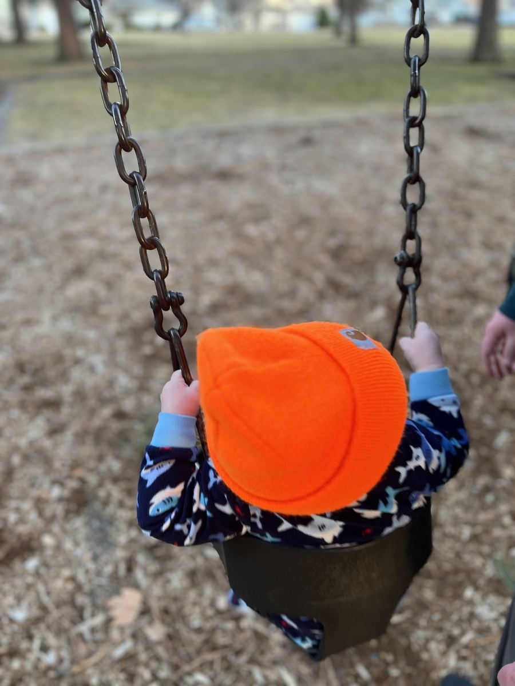

Raising Independent Toddlers: Skills to Foster and Why They Matter
There's a paradox at the heart of toddler parenting: the child who drives you crazy with their insistence on doing everything themselves, putting on their own shoes, pouring their own water, climbing everything in sight, is actually doing exactly what they should be doing. The drive toward independence is one of the most important developmental forces of toddlerhood, and how we respond to it shapes children's confidence, capability, and relationship with challenge for years to come.

Why Independence Matters
The psychologist Erik Erikson described toddlerhood as the stage of "autonomy versus shame and doubt." Children who are given appropriate opportunities to try, to struggle, and to succeed emerge from this stage with a sense of capability and confidence. Children who are constantly helped before they've had a chance to try, or whose every failure is treated as a problem to be fixed, develop doubt about their own competence.
Early independence also builds executive function, the cognitive skills (planning, sequencing, self-regulation) that predict academic and life success better than IQ. When a toddler figures out how to get their arm through a sleeve, they're practicing planning, problem-solving, and persistence, not just dressing themselves.
Age-Appropriate Independent Skills
12–18 months
- Feeding themselves with fingers and beginning with a spoon
- Drinking from a cup
- Helping with simple tasks: putting things in a bin, handing items to a caregiver
- Beginning to indicate needs and preferences
18–24 months
- Taking off shoes and socks (putting on comes later)
- Attempting to put on simple clothing (hats, loose shirts)
- Washing hands with guidance
- Feeding themselves with a spoon fairly well
- Simple tidying tasks (putting toys in a bin)
2–3 years
- Dressing and undressing with decreasing help
- Brushing teeth (with adult finishing)
- Putting on and taking off shoes (Velcro is their friend)
- Pouring from a small pitcher
- Beginning to help with simple meal preparation (stirring, tearing, washing produce)
- Cleaning up a spill with a cloth
- Following a simple two-step routine independently
How to Support Independence Without Abandoning Them
Allow more time
A toddler dressing themselves takes five to ten times longer than you doing it. Building in extra time, getting up earlier, starting the leaving-the-house routine sooner, makes it possible to allow independence without constant time pressure turning everything into a battle.
Prepare the environment
Make independence physically possible. Low hooks for bags and coats. A step stool at the bathroom sink. Accessible snack drawer with healthy options. Child-sized cleaning tools. When the environment is set up for a child's scale, they can do far more independently.
Offer help as a last resort
The Montessori principle "never help a child with a task at which he feels he can succeed" is useful here. Wait. Watch. Offer encouragement. Only step in when they've genuinely struggled and need assistance, and even then, assist with the part they're stuck on rather than taking over the whole task.
Let them fail
The block tower falls down. The water spills. The shoes go on the wrong feet. These are learning opportunities, not crises. A matter-of-fact response, "oops, the tower fell. Want to try again?", teaches that failure is information, not catastrophe. Over-rescuing robs children of this crucial lesson.
Describe effort, not outcome
Rather than "good job!" (which focuses on the result), try "you really kept trying even when that was hard" or "you figured that out yourself." This builds growth mindset, the understanding that ability is developed through effort, not fixed at birth.
The toddler who insists on doing it themselves is building the foundation of the confident, capable person they'll become. Lean in. Let the messes happen. The learning is worth it.
Age-by-Age Guide to Building Toddler Independence
Independence isn't about pushing your child away, it's about giving them age-appropriate chances to succeed on their own. Research consistently shows that children who practice independence early develop stronger self-confidence, problem-solving skills, and emotional regulation.
| Age | Realistic Independence Skills | How to Support |
|---|---|---|
| 12–18 months | Feed themselves with fingers, help put toys in a bin, wave bye-bye | Offer foods in manageable pieces; resist cleaning up for them |
| 18–24 months | Use a spoon, take off shoes, throw trash away, help with laundry | Provide low shelves and hooks at their height |
| 2–3 years | Dress/undress with help, wash hands, pour from a small pitcher, choose snacks | Allow extra time; resist stepping in too quickly |
| 3–4 years | Fully dress themselves, brush teeth with supervision, set the table, make simple choices about meals | Give limited choices: "Would you like the blue cup or the red cup?" |
| 4–5 years | Manage bathroom independently, pack their backpack, help prepare simple snacks, resolve minor conflicts | Let natural consequences teach; coach rather than correct |
The "Yes Space" Concept
A yes space is a safe, toddler-proofed area where your child can explore freely without constant redirection. Instead of saying "no, don't touch that" every few minutes, a yes space lets them practice independence without running into your limits at every turn. This reduces power struggles dramatically and gives children genuine agency.
Creating a yes space doesn't require a dedicated room, a gated living room corner with low shelves, open-ended toys, and breakable objects removed is enough. The goal is an environment that says "yes" to exploration.
Montessori Principles That Work at Home
- Child-sized everything: Low shelves, small pitchers, a step stool at the sink. When tools are the right size, kids can actually use them independently
- Follow the child: Observe what your toddler is naturally drawn to and provide more of it, don't redirect unless there's genuine danger
- Complete activities: Resist finishing tasks for your child. A toddler who spills while pouring their own water learns more from cleaning it up (with help) than from being prevented from trying
- Prepared environment: Put snacks at accessible heights. Let them choose their outfit from two weather-appropriate options. Small choices build decision-making muscles
Why "Helicopter Parenting" Backfires
Well-meaning parents who rush to prevent every stumble actually deprive children of the micro-failures that build resilience. According to a 2018 study in Developmental Psychology, children whose parents allowed age-appropriate risk-taking showed significantly better emotional regulation by age 5. The goal isn't to let children struggle needlessly, it's to tolerate the discomfort of watching them figure things out.
Practical Scripts for Common Independence Roadblocks
When they say "I can't do it": Try "That part IS tricky. I'll show you once and then you try." Avoid taking over.
When they meltdown at a task: Acknowledge the feeling before offering help, "You're frustrated, this is hard. Do you want a 5-minute break and then try again?"
When they refuse to clean up: Make it a together task first ("We'll clean up, you get the blocks, I'll get the books"), then gradually withdraw your participation over weeks.
A Quick Note on Temperament
Independence develops at different rates in different children, and a significant part of that is temperament, not parenting. Slow-to-warm, sensitive, or anxious children may need more scaffolding and a slower pace toward independence than their easy-going peers. This isn't failure. Adjust the pace to your child, not to an external timeline. The goal is always "just slightly beyond their current comfort zone", growth without overwhelm.